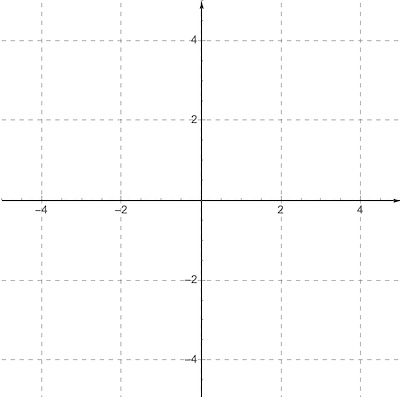
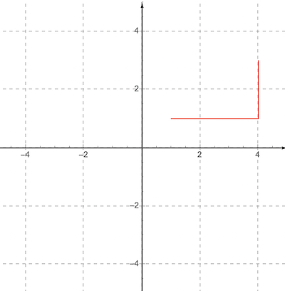
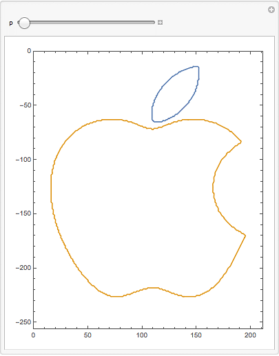
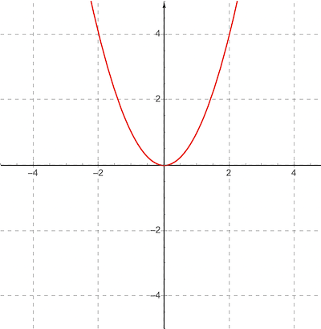
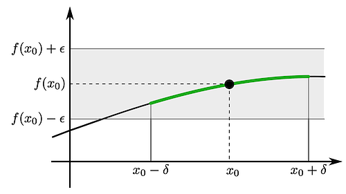
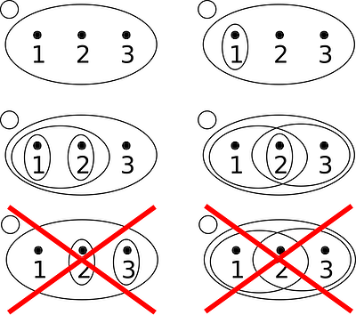
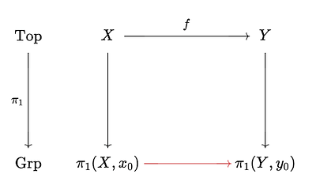
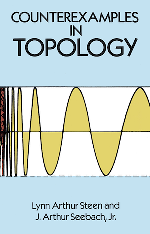

What is the simplest kind of space you can define in mathematics? It helps to start with a familiar example of a space, like the one used in Euclidean geometry. The 2-dimensional Euclidean space can be modeled with ℝ², a Cartesian plane built out of two copies of ℝ, the real numbers. Here's an image of ℝ²:

ℝ²
What's wrong with just using ℝ²? Well it turns out that there is a bunch of baggage that comes with working in this space. Defining the distance between two points u,v ∈ ℝ² uses the Pythagorean theorem:
$$d(u,v) = \sqrt{(u_x - v_x)^2 + (u_y - v_y)^2}$$
This is only one many possible metrics we can define on the set of points ℝ². Another example of a metric on ℝ² would be the taxicab metric, this measures the distance between u and v by measuring the x-offset and the y-offset. This red path below is an example of a straight path in the taxicab metric:

ℝ² with taxicab metric
Another name for the taxicab metric for ℝⁿ is the \(\ell^1\)-norm. Technically, you use a norm to define a metric, but the ideas are closely related. The k-nearest-neighbors algorithm in machine learning makes use of this metric.
Okay, so we can take ℝⁿ and equip it with two different metrics, which changes the geometry, but what doesn't change? Topology studies the things that don't change about a space when you continuously deform it's geometry. For example, consider a "lower case i" shape in ℝ², if you imagine continuously deforming the metric so that it turns into the symbol:

homotopy.gif327 KB
This transformation is an example of a homotopy, it is a topology-preserving transformation that relates all the spaces in the animation as being "topologically equivalent". (Okay, technically a homeomorphism is the full equivalence, but homotopy is a useful tool in figuring out which spaces aren't homeomorphic).
Homotopy also makes an appearance in type theory, by way of HoTT (Homotopy Type Theory). You can also use homotopy to study a group that is an invariant of a topological space. But let's get back to topology, what even is it?
Definition of a topology
So what's the definition of a topology? We need points. So there's a set \(X\), the elements of which we call points. What about distance? Topology can be invariant under changes in the distance between points, so we need a weaker notion of distance. We need some way of saying that some points are "closer" to a point than other points, without necessarily bringing in the baggage of the real numbers and metric functions.
This weaker notion of distance turns out to be characterized by the notion of an open set, but before I go write down the definition of open set, I first want to motivate it. When I first read the definition of open sets as a drunk undergraduate, it made no sense. The second time, as a sober undergraduate, it still made no sense. Only after I took an advanced calculus class did it finally click. The key was understanding the role of continuous functions and how they are defined.
the role of continuous functions in topology
The definition of a topology is also the simplest structure you can impose on two sets X and Y which would give meaning to the notion of continuity of a function \( f : X \to Y \). To make this concrete, consider the function \(f(x) = x^2\), a quadratic function. Here is it's plot:

R2_x2.png64.8 KB How do we prove that the function \(f(x) = x^2\) is continuous in advanced calculus? Typically, you prove continuity at a point, so pick a point \(x_0 \in \mathbb{R}\), then we will get into epsilons and deltas.
proof of the continuity of \(f(x) = x^2\) at the point \(x_0\)
The basic idea behind the ε-δ-proof (epsilon-delta proof) of continuity is this: a function \(f\) is continuous at a point \(x_0\) if small differences in the input near \(x_0\) translate to small differences in the output near \(f(x_0)\).
To make this more precise:
The proof starts with a value ε > 0 (it can be arbitrarily small, but must be finite, no infinitesimals)
Next, you need to show that there exists a δ > 0 such that:
For every \( | x - x_0 | < \delta \), it is also true that: \( | f(x)-f(x_0) | < \epsilon \)
Looking at the proof requirements above, what you need to do to show continuity of f at \(x_0\) is to start by constraining the output to a small ε-neighborhood of points, and then show that there exists a δ-neighborhood in the input space that keeps the output bounded inside the ε-neighborhood.
In other words, bound the output, then prove there is an input that keeps it within those bounds.
The role of open intervals in proving the continuity of \(f\)
Let's visualize this:

neighborhoods.png25.7 KB
The interval \( (x_0 - \delta, x_0 + \delta) \) is the δ-neighborhood, and the interval \( (f(x_0) - \epsilon, f(x_0) + \epsilon) \) is the ε-neighborhood. Notice that the neighborhoods are open intervals. In ℝ with the standard topology, an interval is open if it doesn't include it's boundary points. Why does openness matter? The reason is that open intervals have the property that every point in it has a smaller open interval around it. Open intervals all the way down. This openness property can be generalized in terms of pure sets. This turns out to be useful in a huge category of spaces that are weirder and way less well-behaved than ℝⁿ.
Definition of a topology in terms of open sets
A topological space is a pair \( (X, \tau) \) where \(X\) is a set and \(\tau \subset P(X)\) is a collection of subsets of \(X\), subject to the following constraints:
Empty set and whole set are open: \( \empty, X \in \tau \)
Finite intersections of open sets are open: \( \forall U,V \in \tau: U \cap V \in \tau \)
Intersections of open sets are open: if \( \{ U_\alpha \} \) is any collection of open sets in \(\tau\) (even transfinitely many), then the union is open \( \cup_\alpha U_\alpha \in \tau\)
If you noticed from context, I am using "open" to mean the set is in \(\tau\). You can prove that open intervals of real numbers are open by this definition, if you want. But these three axioms can be used with any sets and they work as a basis for studying continuous functions on much weirder spaces.
Even finite sets like \( \{1,2,3\} \) can be equipped with topologies, this image shows some \( \tau\)s that are valid and two that are not:

fintop.png71.2 KB
This definition of open sets is so basic it's hard to see how it has anything at all to do with space. But think about our ε-δ-proof above, open intervals are essential. Using this more abstract definition of open sets, we can define continuity in a general topological space:
Definition of continuous function in a general topological space
Let \( (X, \tau) \) and \( (Y, \tau') \) be two topological spaces, and \( f : X \to Y \) is a function between them.
Then, \(f\) is continuous if for every open set \( U \in \tau' \) in Y, the pre-image \( f^{-1}(U) \in \tau \) is open in X. The pre-image \( f^{-1}(U) \) is just the set of all points \( x\in X \) such that \( f(x) \in U \). Now, it turns out that this is equivalent to the ε-δ-proof in the case of real numbers! You can see this because the ε-neighborhoods are special cases of the open \(U\) sets in \(Y\).
All you need is open sets. And openness is recursively defined, where \( \empty, X \in \tau \) are open, then finite intersections and arbitrary unions of open sets are open. The rest can be freely chosen, so you can add open sets to a topology to get a "finer" topology, or remove open sets to get a "coarser" topology, but you need to make sure you are satisfying (2.) and (3.) in order for it to still be a topology.
Definition of homeomorphism
Two topological spaces \( (X, \tau) \) and \( (Y, \tau') \) are homemorphic if there exists an invertible function $$ f:X\to Y \text{ and } f^{-1}:Y \to X $$ where both \( f \) and \( f^{-1} \) are continuous.
This homeomorphism is like saying \( (X, \tau) \) and \( (Y, \tau') \) are the same space.
Relationship to group theory
If you've read Group Theory, Rubik's Cubes, and the Standard Model, or know anything about group theory, you might be interested in this part. Given a topological space \( (X, \tau) \), and a point \(x_0 \in X\), you can define a group \( \pi_1(X, x_0)\) called the fundamental group. This group is an invariant of the space, so any homeomorphism of the space will not change the group. It's also true that any continuous function on the space gives rise to a group homomorphism of the fundamental groups. I'll explain below.
Another interesting feature of the fundamental group is that it motivates an important idea in category theory, the idea of a functor. Here's the setup: take two topological spaces \( (X, \tau) \) and \( (Y, \tau') \) and a function \(f : X \to Y\), then there exists a homomorphism between \( \pi_1(X, x_0)\) and \( \pi_1(Y, y_0)\):

functor.png14 KB You can think of \( \pi_1 \) as a functor between the category \( \text{Top} \) of topological spaces and continuous functions and the category \( \text{Grp} \) of groups and homomorphisms. Another way to think about functors is that they map both objects and arrows onto objects and arrows, and they preserve the structure.
Conclusion: were not in K̶a̶n̶s̶a̶s̶ ℝⁿ anymore
Once you strip away the baggage of ℝⁿ and study the pure point-set topologies, you start to get some really weird spaces. If you are into Lovecraftian mathematical monsters, I recommend Counterexamples in Topology

counterexamples.png99 KB
The counterexamples in the above book give a lot of examples that show why these precise definitions are important, and your intuitions you learned working in ℝⁿ can lead you astray. It highlights the importance of rigorous proofs and careful definitions. They are also fun to think about, and useful for probing the boundaries of this mysterious category, \( \text{Top} \). The whole reason homotopy was invented was as a way to study \( \text{Top} \), but even homotopy groups are hard to work with, so they were Abelianized and linearized in homology theory.
This reduction of a hard-to-study structure to an easier-to-study invariant structure \( \text{Top} \to \text{Grp} \) is common in mathematics. All of calculus and differential geometry is basically finding the right linear approximation for a function around a point. These proofs of equivalence and the search for invariant structures serves this practical need, to be able to study and reason about really difficult spaces.